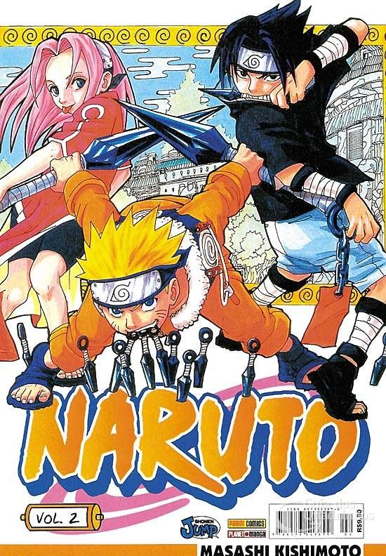

Qual é a história de Naruto?
Naruto é um anime baseado no mangá de
mesmo nome escrito por Masashi Kishimoto.
A série gira em torno das
aventuras
vividas por Naruto Uzumaki, um jovem órfão
habitante da Aldeia da Folha que sonha em
se tornar o quinto Hokage, o maior guerreiro
e governante da vila.